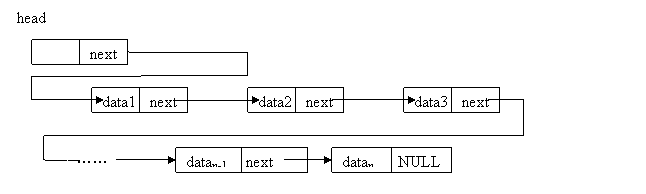
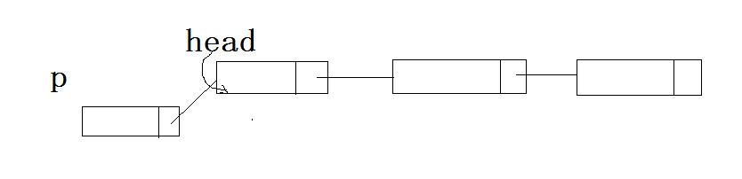
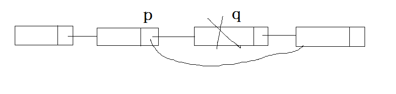
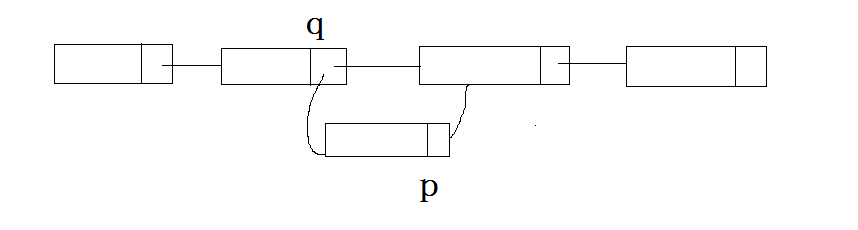
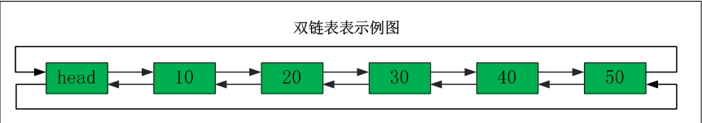
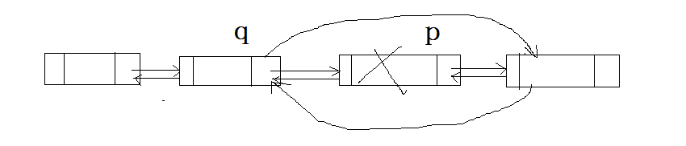
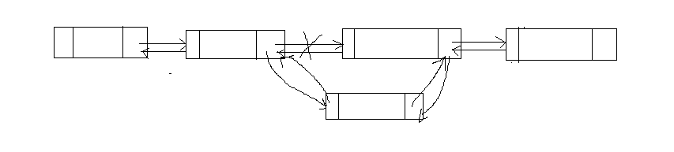

上一篇简单的开了一个头，简单介绍了一下所谓的时间复杂度与空间复杂度，从这篇开始将陆陆续续写一下常用的数据结构：链表、队列、栈、树等等。
链表当初是我在学校时唯一死磕过的数据结构，那个时候自己还算是一个好学生，虽然上课没怎么听懂，但是课后还是根据仔细调试过老师给的代码，硬是自己给弄懂了，它是我离校时唯一能够写出实现的数据结构，现在回想起来应该是它比较简单，算法也比较直来直去吧。虽然它比较简单，很多朋友也都会链表。但是作为一个系列，如果仅仅因为它比较简单而不去理会，总觉得少了点什么，所以再这仍然将其列举出来。
单向链表 单向链表是链表中的一种，它的特点是只有一个指向下一个节点的指针域，对单向链表的访问需要从头部开始，根据指针域依次访问下一个节点，单向链表的结构如下图所示

单向链表的创建 单向链表的结构只需要一个数据域与指针域，这个数据域可以是一个结构体，也可以是多个基本数据类型；指针域是一个指向节点类型的指针，简单的定义如下:
1 2 3 4 5 typedef struct _LIST_NODE { int nVal; struct _LIST_NODE *pNext ; }LIST_NODE, *LPLIST_NODE;
创建链表可以采用头插法或者尾插法来初始化一个有多个节点的链表
头插法的示意图如下:

它的过程就像示意图中展现的，首先使用新节点p的next指针指向当前的头节点把新节点加入到链表头，然后变更链表头指针，这样就在头部插入了一个节点，用代码来展示就是
1 2 p->next = head; head = p;
我们使用一个函数来封装就是
1 2 3 4 5 6 7 8 9 10 11 12 13 14 15 16 17 18 19 20 21 22 23 24 25 26 27 28 29 30 31 32 LPLIST_NODE CreateListHead () LPLIST_NODE pHead = NULL ; while (TRUE) { LPLIST_NODE p = (LPLIST_NODE)malloc (sizeof (LIST_NODE)); if (NULL == p) { break ; } memset (p, 0x00 , sizeof (LIST_NODE)); printf ("请输入节点值(为0时将退出创建节点):" ); scanf_s("%d" , &p->nVal); p->pNext = pHead; pHead = p; if (p->nVal == 0 ) { break ; } } return pHead; }
采用尾插法的话，首先得获得链表的尾部 pTail, 然后使尾节点的next指针指向新节点，然后更新尾节点，用代码来表示就是
1 2 pTail->next = p; pTail = p;
下面的函数是采用尾插法来构建链表的例子
1 2 3 4 5 6 7 8 9 10 11 12 13 14 15 16 17 18 19 20 21 22 23 24 25 26 27 28 29 30 31 32 33 34 35 36 37 38 39 40 41 42 43 LPLIST_NODE CreateListTail () LPLIST_NODE pHead = NULL ; LPLIST_NODE pTail = pHead; while (NULL != pTail && NULL != pTail->pNext) { pTail = pTail->pNext; } while (TRUE) { LPLIST_NODE p = (LPLIST_NODE)malloc (sizeof (LIST_NODE)); if (NULL == p) { break ; } memset (p, 0x00 , sizeof (LIST_NODE)); printf ("请输入节点值(为0时将退出创建节点):" ); scanf_s("%d" , &p->nVal); if (NULL == pTail) { pHead = p; pTail = pHead; }else { pTail->pNext = p; pTail = p; } if (p->nVal == 0 ) { break ; } } return pHead; }
链表的遍历 链表的每个节点在内存中不是连续的，所以它不能像数组那样根据下标来访问（当然可以利用C++中的运算符重载来实现使用下标访问），链表中的每一个节点都保存了下一个节点的地址，所以我们根据每个节点指向的下一个节点来依次访问每个节点，访问的代码如下:
1 2 3 4 5 6 7 8 void TraverseList (LPLIST_NODE pHead) while (NULL != pHead) { printf ("%d\n" , pHead->nVal); pHead = pHead->pNext; } }
链表的删除 链表的每个节点都是在堆上分配的，在不再使用的时候需要手工清除每个节点。清除时需要使用遍历的方法，一个个的删除，只是需要在遍历的指针移动到下一个节点前保存当前节点，以便能够删除当前节点，删除的函数如下
1 2 3 4 5 6 7 8 9 10 void DestroyList (LPLIST_NODE pHead) LPLIST_NODE pTmp = pHead; while (NULL != pTmp) { pTmp = pHead->pNext; delete pHead; pHead = pTmp; } }
删除单个节点

如上图所示，假设我们要删除q节点，那么首先需要遍历找到q的上一个节点p，将p的next指针指向q的下一个节点，也就是赋值为q的next指针的值,用代码表示就是
删除节点的函数如下:
1 2 3 4 5 6 7 8 9 10 11 12 13 14 15 16 17 18 19 20 21 22 23 24 25 26 27 28 29 30 31 32 void DeleteNode (LPLIST_NODE* ppHead, int nValue) if (NULL == ppHead || NULL == *ppHead) { return ; } LPLIST_NODE p, q; p = *ppHead; while (NULL != p) { if (nValue == p->nVal) { if (*ppHead == p) { *ppHead = p->pNext; free (p); }else { q->pNext = p->pNext; free (p); } p = NULL ; q = NULL ; break ; } q = p; p = p->pNext; } }
在上述代码中首先来遍历链表，找到要删除的节点p和它的上一个节点q，由于头节点没有上一个节点，所以需要特别判断一下需要删除的是否为头节点，如果为头结点，则直接将头指针指向它的下一个节点，然后删除头结点即可，如果不是则采用之前的方法来删除。
任意位置插入节点

如上图所示，如果需要在q节点之后插入p节点的话，需要两步，将q的next节点指向q，然后将q指向之前p的下一个节点，这个时候需要注意一下顺序，如果我们先执行q->next = p 的话，那么之前q的下一个节点的地址就被覆盖掉了，这个时候后面的节点都丢掉了，所以这里我们要先执行p->next = q->next 这条语句，然后在执行q->next = p
下面是一个创建有序链表的例子，这个例子演示了在任意位置插入节点
1 2 3 4 5 6 7 8 9 10 11 12 13 14 15 16 17 18 19 20 21 22 23 24 25 26 27 28 29 30 31 32 33 34 35 36 37 38 39 40 41 42 43 44 45 46 47 48 49 LPLIST_NODE CreateSortedList () LPLIST_NODE pHead = NULL ; while (TRUE) { LPLIST_NODE p = (LPLIST_NODE)malloc (sizeof (LIST_NODE)); if (NULL == p) { break ; } memset (p, 0x00 , sizeof (LIST_NODE)); printf ("请输入节点值(为0时将退出创建节点):" ); scanf_s("%d" , &p->nVal); if (NULL == pHead) { pHead = p; }else { if (pHead->nVal > p->nVal) { p->pNext = pHead; pHead = p; }else { LPLIST_NODE q = pHead; LPLIST_NODE r = q; q = q->pNext; while (NULL != q && q->nVal < p->nVal) { r = q; q = q->pNext; } p->pNext = r->pNext; r->pNext = p; } } if (p->nVal == 0 ) { break ; } } return pHead; }
当确定新节点的值之后，首先遍历链表，直到找到比新节点中数值大的节点，那么这个新节点就是需要插入到该节点之前。在遍历的时候使用r来保存之前的节点。这里需要注意这些情况:
链表为空：这种情况下，直接让头指针指向当前节点
如果头节点本身就是大于新节点的值，这种情况下采用头插法，将新节点插入到头部
如果链表中未找到比新节点的值更大的值，这种情况下直接采用尾插发
在链表中找到比新节点值更大的节点，这种情况下，在链表中插入
但是在代码中并没有考虑到尾部插入的情况，由于在尾部插入时，r等于尾节点，r->pNext 的值为NULL， 所以 p->pNext = r->pNext;r->pNext = p; 可以看成 p->pNext = NULL; r->pNext = p; 也就是将p的next指针指向空，让其作为尾节点，将之前的尾节点的next指针指向新节点。
循环链表 循环链表是建立在单向链表的基础之上的，循环链表的尾节点并不指向空，而是指向其他的节点，可以是头结点，可以是自身，也可以是链表中的其他节点，为了方便操作，一般将循环链表的尾节点的next指针指向头节点，它的操作与单链表的操作类似，只需要将之前判断尾节点的条件变为 pTail->pNext == pHead 即可。这里就不再详细分析每种操作了，直接给出代码
1 2 3 4 5 6 7 8 9 10 11 12 13 14 15 16 17 18 19 20 21 22 23 24 25 26 27 28 29 30 31 32 33 34 35 36 37 38 39 40 41 42 43 44 45 46 47 48 49 50 51 52 53 54 55 56 57 58 59 60 61 62 63 64 65 66 LPLIST_NODE CreateLoopList () LPLIST_NODE pHead = NULL ; LPLIST_NODE pTail = pHead; while (1 ) { LPLIST_NODE p = (LPLIST_NODE)malloc (sizeof (LIST_NODE)); if (NULL == p) { break ; } memset (p, 0x00 , sizeof (LIST_NODE)); printf ("请输入一个值:" ); scanf_s("%d" , &p->nVal); if (NULL == pHead) { pHead = p; p->pNext = pHead; pTail = pHead; }else { pTail->pNext = p; p->pNext = pHead; pTail = p; } if (0 == p->nVal) { break ; } } return pHead; } void TraverseLoopList (LPLIST_NODE pHead) LPLIST_NODE pTmp = pHead; if (NULL == pTmp) { return ; } do { printf ("%d, " , pTmp->nVal); pTmp = pTmp->pNext; } while (pTmp != pHead); } void DestroyLoopList (LPLIST_NODE pHead) LPLIST_NODE pTmp = pHead; LPLIST_NODE pDestroy = pTmp; if (NULL == pTmp) { return ; } do { pTmp = pDestroy->pNext; free (pDestroy); pDestroy = pTmp; }while (pHead != pTmp); }
判断链表是否为循环链表 在上面说过，循环链表的尾指针不一定指向头节点，它可以指向任何节点，那么该怎么判断一个节点是否为循环链表呢？既然它可以指向任意的节点，那么肯定是找不到尾节点的，而且堆内存的分配是随机的，我们也不可能按照指针变量的大小来判断哪个节点在前哪个在后。
回想一下在学校跑一千米的时候是不是回出现这样的情况，跑的块的会领先跑的慢的一周？根据这种情形我们可以考虑使用这样一种办法：定义两个指针，一个一次走两步也是就是p = p->next->next， 一个慢指针一次走一步，也就是q = q->next，如果是循环链表，那么快指针在某个时候一定会领先慢指针一周，也就是达到 p == q 这个条件，否则就是非循环链表。根据这个思路，可以考虑写下如下代码:
1 2 3 4 5 6 7 8 9 10 11 12 13 14 15 16 17 18 19 20 21 22 23 bool IsLoopList (LPLIST_NODE pHead) if (NULL == pHead) { return false ; } LPLIST_NODE p = pHead; LPLIST_NODE q = pHead->pNext; while (NULL != p && NULL != q && NULL != q->pNext && p != q) { p = p->pNext; q = q->pNext->pNext; } if (q == NULL || NULL == p || NULL == q->pNext) { return false ; } return true ; }
双向链表 之前在插入或者删除的时候，需要定义两个指针变量，让其中一个一直更在另一个的后面，单向链表有一个很大的问题，不能很方便的找到它的上一个节点，为了解决这一个问题，提出了双向链表，双向链表与单向相比，多了一个指针域，用来指向它的上一个节点，也就是如下图所示:

双向链表的操作与单向链表的类似，只是多了一个指向前一个节点的指针域，它要考虑的情况与单向链表相似
删除节点 删除节点的示意图如下:

假设删除的节点p，那么首先根据p的pre指针域，找到它的上一个节点q，采用与单向链表类似的操作:
1 2 q->next = p->next; p->next->pre = q;
下面是删除节点的例子:
1 2 3 4 5 6 7 8 9 10 11 12 13 14 15 16 17 18 19 20 21 22 23 24 25 26 27 28 29 30 31 32 33 34 void DeleteDNode (LPDLIST_NODE* ppHead, int nValue) if (NULL == ppHead || NULL == *ppHead) { return ; } LPDLIST_NODE p = *ppHead; while (NULL != p && p->nVal != nValue) { p = p->pNext; } if (NULL == p) { return ; } if (*ppHead == p) { *ppHead = (*ppHead)->pNext; p->pPre = NULL ; free (p); } else if (p->pNext == NULL ) { p->pPre->pNext = NULL ; free (p); }else { p->pPre->pNext = p->pNext; p->pNext->pPre = p->pPre; } }
插入节点 插入节点的示意图如下:

假设新节点为p，插入的位置为q，则插入操作可以进行如下操作
1 2 3 4 p->next = q->next; p->pre = q; q->next->pre = p; q->next = p;
也是一样要考虑不能覆盖q的next指针域否则可能存在找不到原来链表中q的下一个节点的情况。所以这里先对p的next指针域进行操作
1 2 3 4 5 6 7 8 9 10 11 12 13 14 15 16 17 18 19 20 21 22 23 24 25 26 27 28 29 30 31 32 33 34 35 36 37 38 39 40 41 42 43 44 45 46 47 48 49 50 51 52 53 54 55 56 LPDLIST_NODE CreateSortedDList () LPDLIST_NODE pHead = NULL ; while (1 ) { LPDLIST_NODE pNode = (LPDLIST_NODE)malloc (sizeof (DLIST_NODE)); if (NULL == pNode) { return pHead; } memset (pNode, 0x00 , sizeof (DLIST_NODE)); printf ("请输入一个整数:" ); scanf_s("%d" , &pNode->nVal); if (NULL == pHead) { pHead = pNode; }else { LPDLIST_NODE q = pHead; LPDLIST_NODE r = q; while (NULL != q && q->nVal < pNode->nVal) { r = q; q = q->pNext; } if (q == pHead) { pNode->pNext = pHead; pHead->pPre = pNode; pHead = pNode; }else if (NULL == q) { r->pNext = pNode; pNode->pPre = r; }else { pNode->pPre = r; pNode->pNext = q; r->pNext = pNode; q->pPre = pNode; } } LPDLIST_NODE q = pHead; LPDLIST_NODE r = q; if (0 == pNode->nVal) { break ; } } return pHead; }
链表还有一种是双向循环链表，对于这种链表主要是在双向链表的基础上，将头结点的pre指针指向某个节点，将尾节点的next节点指向某个节点，而且这两个指针可以指向同一个节点也可以指向不同的节点，一般在使用中都是head的pre节点指向尾节点，而tail的next节点指向头节点。这里就不再详细说明，这些链表只要掌握其中一种，剩下的很好掌握的。